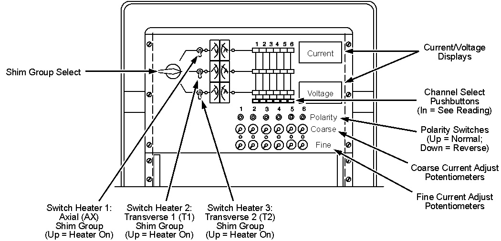
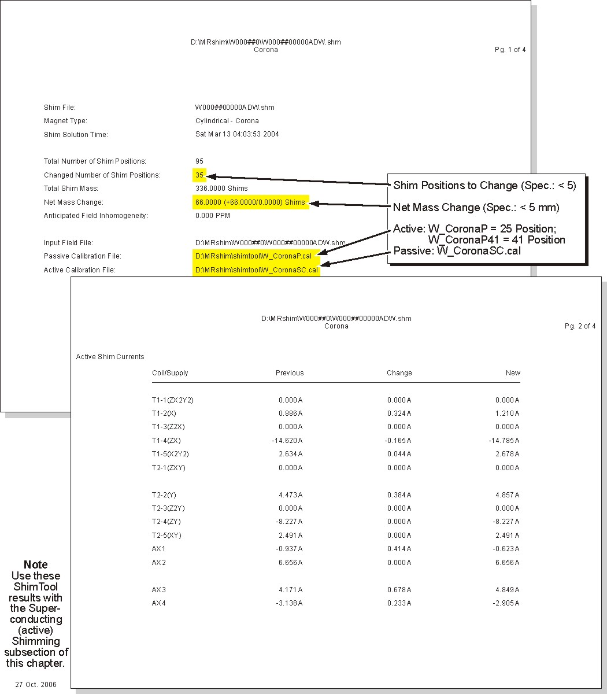

Illustration 52: Example ShimTool Printed Report, WB Series LCC300, Pages 1 and 2

Table 8: S/C Shim Groups
| Transverse 1 Shim Group | Transverse 2 Shim Group | Axial Shim Group | |
|---|---|---|---|
| Course/Fine Adjust Potentiometer & Polarity Light/Switch | “Shim Group Select” Switch Setting | ||
| Middle | Bottom | Top | |
| Coil (Circuit) | Coil (Circuit) | Coil (Circuit) | |
| 1 | T1-1 (Z X2Y2) | T2-1 (ZXY) | AX1 (Z1) |
| 2 | T1-2 (X) | T2-2 (Y) | AX2 (Z2) |
| 3 | T1-3 (Z2X) | T2-3 (Z2Y) | AX3 (Z3) |
| 4 | T1-4 (ZX) | T2-4 (ZY) | AX4 (Z4) |
| 5 | T1-5 (X2Y2) | T2-5 (XY) | AX5* (Z5)* |
| 6 | T1-6 (X3)* | T2-6 (Y3)* | AX6* (Z6)* |
| * Not applicable to W0 Series LCC300 magnets. | |||
Illustration 50: Shim Power Supply Controls (Front Panel)

| NOTE: | The present current/polarity, referred to in the following
steps, is the current/polarity that presently exists in each shim
coil. The present currents/polarities are those ShimTool calculated/reported
(in the Previous column under Active
Shim Currents shown in Illustration 51 or Illustration 52) in its previous iteration, and then loaded into
the shim coils and recorded in SC Shimming Data in the New column. Illustration 51 and Illustration 52 show the C: drive directory paths used by Windows 2000 ShimTool installations. Windows XP installations use D: drive directory paths instead. |
Illustration 51: Example ShimTool Printed Report, W Series LCC300, Pages 1 and 2

Illustration 52: Example ShimTool Printed Report, WB Series LCC300, Pages 1 and 2